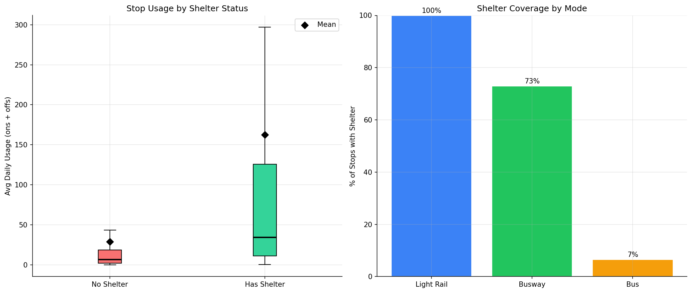
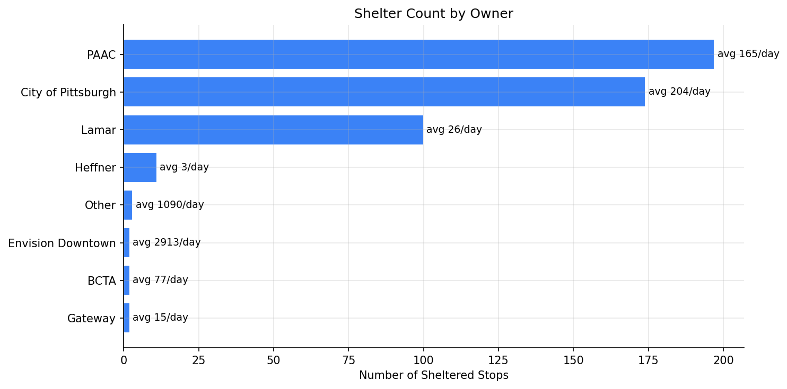

Analysis
32 - Shelter Equity
Equity and Strategic Planning
Coverage: Coverage window unavailable for this page.
Built 2026-04-03 19:39 UTC · Commit 11cddd4
Page Navigation
Analysis Navigation
Data Provenance
flowchart LR
32_shelter_equity(["32 - Shelter Equity"])
f1_32_shelter_equity[/"data/bus-stop-usage/wprdc_stop_data.csv"/] --> 32_shelter_equity
d1_32_shelter_equity(("numpy (lib)")) --> 32_shelter_equity
d2_32_shelter_equity(("polars (lib)")) --> 32_shelter_equity
d3_32_shelter_equity(("scipy (lib)")) --> 32_shelter_equity
classDef page fill:#dbeafe,stroke:#1d4ed8,color:#1e3a8a,stroke-width:2px;
classDef table fill:#ecfeff,stroke:#0e7490,color:#164e63;
classDef dep fill:#fff7ed,stroke:#c2410c,color:#7c2d12,stroke-dasharray: 4 2;
classDef file fill:#eef2ff,stroke:#6366f1,color:#3730a3;
classDef api fill:#f0fdf4,stroke:#16a34a,color:#14532d;
classDef pipeline fill:#f5f3ff,stroke:#7c3aed,color:#4c1d95;
class 32_shelter_equity page;
class d1_32_shelter_equity,d2_32_shelter_equity,d3_32_shelter_equity dep;
class f1_32_shelter_equity file;
Findings
Findings: Shelter Equity
Summary
Only 7.3% of PRT bus stops have shelters, yet those sheltered stops serve 31% of total system ridership. Sheltered stops have 5x the median daily usage of unsheltered stops (34 vs 7 riders/day). The most striking gap is among regular bus stops, where just 7% have shelters despite serving the vast majority of riders. Several of the system's busiest stops -- including downtown intersections with 2,000+ daily boardings -- lack any shelter.
Key Numbers
- 6,719 unique physical stops in the pre-pandemic weekday data
- 491 (7.3%) have shelters; 6,228 do not
- Sheltered stops: median 34.3/day, mean 162.6/day
- Unsheltered stops: median 6.5/day, mean 28.9/day
- Sheltered stops serve 30.7% of total system ridership despite being only 7% of stops
- Mann-Whitney U test: p = 9.2e-84 (sheltered stops have significantly higher usage)
- Bus mode: only 7% sheltered; Busway: 73%; Light Rail: 100%
Observations
- Shelter placement correlates with usage but leaves major gaps. The top 20 unsheltered stops each see 1,200-2,800 daily riders. The busiest unsheltered stop (7th St at Penn Ave, 2,841/day) handles more riders than all but a handful of sheltered stops.
- Downtown Pittsburgh has the biggest equity gap. Almost all top unsheltered stops are in the downtown/Oakland corridor (5th Ave, Liberty Ave, Wood St, Stanwix St). These are high-exposure locations where riders wait in weather.
- PAAC and City of Pittsburgh own most shelters (197 and 174 respectively), with City shelters at higher-usage stops on average (204 vs 165/day).
- Lamar (advertising) shelters skew low-usage: 100 shelters averaging only 26 riders/day, suggesting ad-driven placement rather than ridership-driven.
- Heffner shelters also serve low-usage stops (avg 3/day), further suggesting non-ridership factors drive some shelter placement.
- "Envision Downtown" and "Other" shelters serve the absolute highest-volume locations (2,913 and 1,090/day respectively), but account for only 5 stops total.
Discussion
The shelter coverage gap represents a tangible rider experience problem. The 20 busiest unsheltered stops collectively serve ~35,000 riders per day who wait without weather protection. Given Pittsburgh's climate (Analysis 28 showed snow days and freeze days significantly affect OTP), shelter absence at high-volume stops compounds the negative experience of unreliable service.
The divergence between shelter owners reveals different placement strategies. PAAC and City of Pittsburgh place shelters at moderately high-usage stops (165-204/day), following a ridership-informed approach. Lamar's advertising-driven placements (26/day average) prioritize visibility for ad revenue over rider need, and Heffner's placements (3/day) appear driven by factors entirely unrelated to ridership. This suggests the advertising-shelter model, while providing free infrastructure, does not align with transit equity goals.
The Pareto finding from Analysis 34 (2% of stops serve 50% of riders) frames the opportunity: sheltering just the top 150 unsheltered stops would reach a large share of unprotected riders. At typical shelter costs of $15-30K per installation, covering the top 20 unsheltered stops would cost $300-600K while protecting ~35,000 daily riders -- a strong return on investment.
The downtown equity gap is particularly striking because these stops are the most visible face of the transit system. Visitors and new riders encountering a 2,800-rider/day stop with no shelter receive a signal about the system's investment priorities. Addressing the downtown/Oakland gaps would improve both rider experience and public perception.
Caveats
- The shelter field in the WPRDC data may not be fully up to date; some shelters may have been added or removed since the data was compiled.
- "No Shelter" is the default -- stops with missing shelter data are treated as unsheltered, which may slightly overcount the unsheltered total.
- Usage data is pre-pandemic (FY2019); current ridership patterns at specific stops may have shifted.
- Light rail shows 100% coverage but only 1 stop appears in the data, so the mode comparison is limited for rail.
Output

box/violin plot comparing usage distributions.

bar chart of shelter coverage rates by mode.
No interactive outputs declared.
per-stop summary with usage and shelter status.
Preview CSV
top unsheltered stops ranked by usage.
Preview CSV
Methods
Methods: Shelter Equity
Question
Are bus shelters equitably distributed relative to ridership? Which high-usage stops lack shelters, and does shelter coverage vary by mode or ownership?
Approach
- Aggregate pre-pandemic weekday ridership to the physical-stop level (summing across routes) to get total daily usage per stop.
- Classify each stop as sheltered or unsheltered using the
sheltercolumn; further break down by shelter owner. - Compare median and mean usage between sheltered vs unsheltered stops (Mann-Whitney U test).
- Compute the share of total system ridership served by sheltered stops.
- Identify the top high-usage unsheltered stops (ranked by daily ons+offs) as priority candidates for shelter installation.
- Examine shelter coverage by mode (bus, busway, light rail) and stop type.
- Generate charts: ridership distribution by shelter status, shelter owner breakdown, and a priority list of unsheltered high-usage stops.
Data
| Name | Description | Source |
|---|---|---|
wprdc_stop_data.csv |
Stop-level boardings/alightings, shelter status, stop type, mode | Local CSV (data/bus-stop-usage/) |
Output
output/shelter_equity_summary.csv-- per-stop summary with usage and shelter statusoutput/unsheltered_priority.csv-- top unsheltered stops ranked by usageoutput/ridership_by_shelter.png-- box/violin plot comparing usage distributionsoutput/shelter_coverage_by_mode.png-- bar chart of shelter coverage rates by mode
Source Code
|
Sources
| Name | Type | Why It Matters | Owner | Freshness | Caveat |
|---|---|---|---|---|---|
| data/bus-stop-usage/wprdc_stop_data.csv | file | Referenced via DATA_DIR path composition in analysis script. | Local project data owner not specified. | Snapshot file; refresh by rerunning its pipeline step. | May lag upstream source updates. |
| numpy | dependency | Runtime dependency required for this page's pipeline or analysis code. | Open-source Python ecosystem maintainers. | Version pinned by project environment until dependency updates are applied. | Library updates may change behavior or defaults. |
| polars | dependency | Runtime dependency required for this page's pipeline or analysis code. | Open-source Python ecosystem maintainers. | Version pinned by project environment until dependency updates are applied. | Library updates may change behavior or defaults. |
| scipy | dependency | Runtime dependency required for this page's pipeline or analysis code. | Open-source Python ecosystem maintainers. | Version pinned by project environment until dependency updates are applied. | Library updates may change behavior or defaults. |